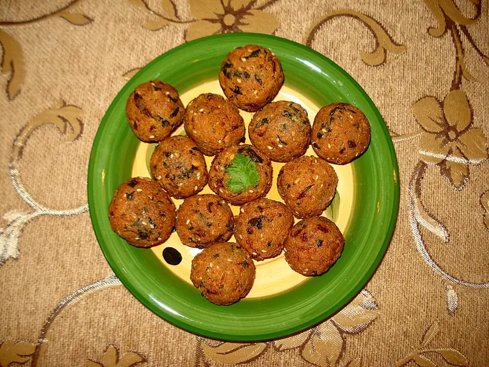

Фото: Miansari66, CC0

Фалафель
Хрустящие шарики из сырого замоченного нута с зеленью и кумином
40 мин4 порц.445 ккал на порциюБ 13 · Ж 24 · У 46Еврейская кухня
Продукты на 4 порц.
- Нут1,25 стак.
- Лук репчатый1 шт
- Чеснок3 зуб.
- Петрушка1 пучок
- Кинза0,5 пучок
- Зира1,5 ч. л.
- Сода0,5 ч. л.
- Мука пшеничная2 ст. л.
- Соль1 ч. л.
- Перец чёрный молотый1 щеп.
- Растительное масло80 мл
- Тахини (кунжутная паста) по желанию2 ст. л.
- Лимон по желанию0,25 шт
Как готовить
- Нут залейте большим количеством холодной воды и оставьте на 12 часов. Слейте воду и обсушите. Варить нут не нужно, иначе шарики развалятся.
- Измельчите в блендере нут, лук, чеснок, петрушку и кинзу до мелкой крошки, похожей на влажный песок, не до пюре.
- Добавьте кумин, соль, перец, соду и муку. Перемешайте и уберите в холодильник на 20 минут.
- Мокрыми руками скатайте шарики размером с грецкий орех и слегка приплюсните.
- Разогрейте масло на сковороде слоем 1,5-2 см на среднем огне.
- Жарьте фалафель по 3-4 минуты с каждой стороны до тёмно-золотой корочки. Выложите на бумажное полотенце.
- Для соуса разведите тахини соком лимона и 3-4 ст. л. воды до густоты сметаны.
Совет. Если шарики разваливаются в масле, добавьте ещё 1-2 ст. л. муки и подержите массу в холодильнике дольше. Консервированный нут для фалафеля не подходит.